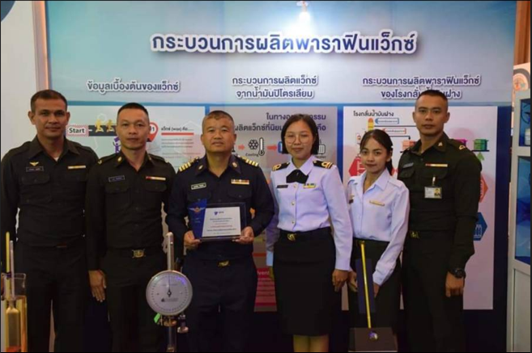

Partner Support Executive of Transaction Processing
Company: DeeMoney Co.,Ltd
Duration: December 2025 - Present
Responsibilities:
Manage and support transaction processing for partners.
Ensure compliance with financial regulations.
Coordinate with internal teams to resolve issues.
Business Operations of KYC team
Company: KuCoin Thailand by ERX Co.,Ltd
Duration: March 2025 - November 2025
Responsibilities:
Managed End-to-End KYC/Onboarding: Performed KYC/CDD/EDD for new individual and corporate customers, ensuring strict compliance with AML/CFT regulations.
Mule Account Monitoring & Strategy:
Designed and maintained a data file structure for tracking and storing information on suspected mule accounts (บัญชีม้า).
Conducted continuous ongoing monitoring and management of mule accounts in adherence to TDO policies.
Data Analytics & Reporting:
Analyzed Customer Onboarding data and calculated reject rates.
Presented data-driven insights to management using Excel Dashboards on reject rate trends and onboarding efficiency.
Regulatory Project Participation: Participated in the CFR UAT (Customer Fraud Registry User Acceptance Test) project organized by ITMX, collaborating with various financial institutions (Banks and Non-banks).
Cross-Functional Coordination:
Coordinated with Compliance, Risk, and IT teams to enhance KYC processes and resolve customer issues.
Documentation & Compliance:
Maintained accurate records of KYC activities and ensured documentation met regulatory standards.
Customer Service
Company: ERX Co.,Ltd
Duration: October 2024 - February 2025
Responsibilities:
Process Improvement & Leadership:
Led the CS workflow project to restructure and standardize team operational processes, significantly boosting overall team efficiency.
Developed and authored comprehensive Standard Operating Procedures (SOPs) and training manuals for the Customer Service team.
Customer Support Excellence:
Provide support to customers via phone and email.
Resolve customer inquiries and issues promptly.
Maintain high customer satisfaction levels.
Senior Operations Officer of the Crude Oil Refinery Section

Company: Petroleum Refining Division, Northern Petroleum Development Center, Department of Military Energy, Defence Industry and Energy Center, Office of the Permanent Secretary for Defence
Duration: September 2017 - January 2023
Responsibilities:
Project Management & Administration (PMO Role):
Served as the Project Secretary for major operational projects, including coordinating three annual Refinery Shutdown Maintenance (Turnaround) cycles.
Acted as the Project Secretary for the organizational Knowledge Management (KM) initiative, facilitating knowledge capture and transfer.
Managed and oversaw the internal administration and operational workflows of the department.
Technical Research & Data Analytics:
Conducted research and presented findings to improve product efficacy, including a study titled: "Analysis of Crude Oil and Refined Product Components for Database Establishment and Continuous Improvement."
Summarized and analyzed market trends and production costs, preparing and presenting insights to Senior Management for strategic decision-making.
Performed in-depth process analysis and troubleshooting to optimize refining operations and enhance product yield.
Operational & Environmental Compliance:
Planned and analyzed the refinery's wastewater treatment processes to ensure environmental compliance and operational efficiency.
Monitored and implemented energy conservation measures in compliance with internal and regulatory standards.
Coordinated cross-functional initiatives to support operational excellence and continuous improvement.